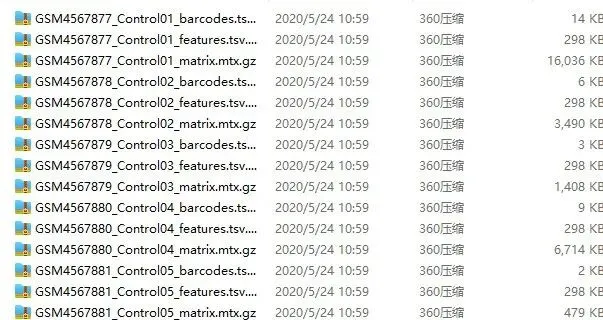
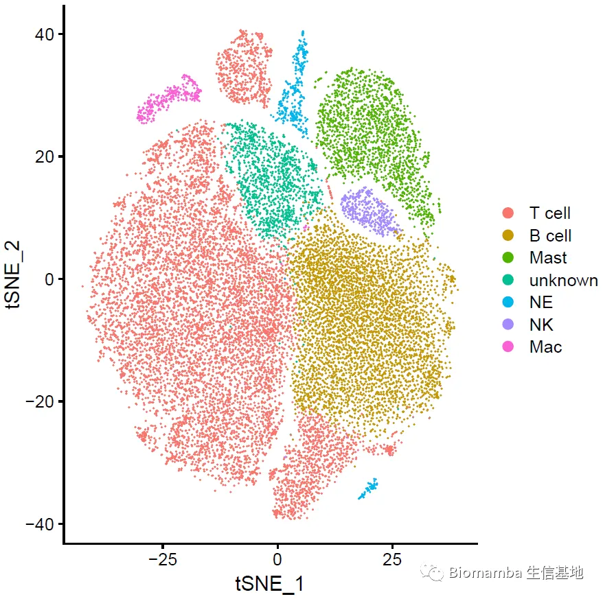

批量整理好GEO中下载的单细胞数据
原文：https://mp.weixin.qq.com/s?__biz=MzAwMzIzOTk5OQ==&mid=2247486045&idx=1&sn=0b6874bcffc8abafb505cabce4c4fc0e&chksm=9b3f730dac48fa1b140ef01c07a7749e69df4fa7d2056deeed0673c668b6246724cd85741125#rd 合集：单细胞教程全收录
前言
很多时候分析的过程中我们会得到一堆文件，这个时候就需要我们对这些数据进行整理归纳让它们排好队，等待我们的分析。比如我们之前教过大家批量读取 cellranger的输出文件（答读者问 （十一）如何一次性读取一个目录下的cellranger输出文件？）。但是显然，不是所有数据都像这样整理好了存在文件夹中等你分析。比如，今天我们下载了GSE151177 这个数据，解包后的文件夹里有23个样本的cellranger输出文件（barcodes.tsv，feature.tsv，matrix.mtx）。显然，这些文件不仅没有像我们之间介绍的那样工整存在各自的文件夹之中，并且还十分难受的加上了各种前缀，说实话如果只有一两个样本我就直接手动重命名了，既然这么多的样本，那我们就来解放一下生产力。 BTW，数据下载链接，感兴趣的同学可以自己试试：https://www.ncbi.nlm.nih.gov/geo/download/?acc=GSE151177&format=file

01
先理解一下这些文件
首先，我们需要用到一点点字符串处理的小技巧，我们把这些数据放入'data'文件夹下，打开Rstudio开始操作：
myfile <- list.files('data/')
myfile[1:6]
## [1] "GSM4567877_Control01_barcodes.tsv.gz"
## [2] "GSM4567877_Control01_features.tsv.gz"
## [3] "GSM4567877_Control01_matrix.mtx.gz"
## [4] "GSM4567878_Control02_barcodes.tsv.gz"
## [5] "GSM4567878_Control02_features.tsv.gz"
## [6] "GSM4567878_Control02_matrix.mtx.gz"
mysample <- unlist(lapply(myfile,function(x){strsplit(x,'_')[[1]][2]}))
mysample[1:6]
## [1] "Control01" "Control01" "Control01" "Control02" "Control02" "Control02"
fileformat <- unlist(lapply(myfile,function(x){strsplit(x,'_')[[1]][3]}))
fileformat[1:6]
## [1] "barcodes.tsv.gz" "features.tsv.gz" "matrix.mtx.gz" "barcodes.tsv.gz"
## [5] "features.tsv.gz" "matrix.mtx.gz"
02
开始操作
可以看出，这些文件名的规律都是GSM编号+样本名+文件原名，因此我们用这些文件名的分隔符'_'把GSM编号、样本名、文件原名分别拆开来。然后用下面的命令创建新的文件并删除原文件：
-
-
-
-
-
-
-
- *
-
-
-
-
-
-
for(i in 1: length(myfile)){ #创建每个样本自己的文件夹: dir.create(paste0('data/',mysample[i])) #把文件依次移动到新的文件夹中并命名: file.copy(paste0('data/',myfile[i]), paste0('data/',mysample[i],'/',fileformat[i])) #删除原文件: unlink(paste0('data/',myfile[i]))}
我们看一下上面这个代码框具体运行的过程和效果：
可以看出来，啪一下，很快啊，原来的文件就没有了，并且新的文件也整整齐齐的出现了，我们只要用这篇（答读者问 （十一）如何一次性读取一个目录下的cellranger输出文件？）教过大家的代码，就可以循环读入这些文件并创立Seurat对象了。然后再走一下这里（手把手教你做单细胞测序数据分析（三）——单样本分析）的代码，就可以看到这个数据集的全貌啦：

当然，你在数据分析的过程中可能会遇到各式各样的问题，如果上面的内容你不太理解，你可能需要系统性 地看一看我们之前的推送：

往期回顾
如果你还没学完基础课程，一定要跟着下面蓝色超链接的顺序走，每篇文章中的超链接 要点开看（按顺序掌握自然没有疑问）：
 B站视频，先看一遍视频再去看推送操作，建议至少看三遍：https://www.bilibili.com/video/BV1S44y1b76Z/
单细胞测序基础数据分析保姆级教程，代码部分整理在往期推送之中：手把手教你做单细胞测序数据分析（一）——绪论
手把手教你做单细胞测序数据分析（二）——各类输入文件读取
手把手教你做单细胞测序数据分析（三）——单样本分析
手把手教你做单细胞测序数据分析（四）——多样本整合手把手教你做单细胞测序数据分析（五）——细胞类型注释手把手教你做单细胞测序数据分析（六）——组间差异分析及可视化手把手教你做单细胞测序数据分析（七）——基因集富集分析
B站视频，先看一遍视频再去看推送操作，建议至少看三遍：https://www.bilibili.com/video/BV1S44y1b76Z/
单细胞测序基础数据分析保姆级教程，代码部分整理在往期推送之中：手把手教你做单细胞测序数据分析（一）——绪论
手把手教你做单细胞测序数据分析（二）——各类输入文件读取
手把手教你做单细胞测序数据分析（三）——单样本分析
手把手教你做单细胞测序数据分析（四）——多样本整合手把手教你做单细胞测序数据分析（五）——细胞类型注释手把手教你做单细胞测序数据分析（六）——组间差异分析及可视化手把手教你做单细胞测序数据分析（七）——基因集富集分析
上游fastq文件处理： 单细胞分析的最上游——处理Fastq文件：cellranger 单细胞分析的最上游——处理Fastq文件：dropseqRunner
细胞通讯B站连续播放起来比较方便：
https://www.bilibili.com/video/BV1Ab4y1W7qx?p=1
往期推送单细胞测序数据进阶分析—《细胞通讯》1.概论 单细胞测序数据进阶分析—《细胞通讯》2.1CellChat基础分析教程 单细胞测序数据进阶分析—《细胞通讯》2.2CellChat多组别分析 给你们申请到了免费的128GB云服务器
其他单细胞相关技术贴也在这里：细胞的数量由誰决定？单细胞中应该如何做GSVA？答读者问（三）：单细胞测序前景答读者问（四）：如何分析细胞亚群答读者问（六）：Seurat中如何让细胞听你指挥答读者问（八）：为什么Read10X也会报错?
答读者问（十）整合后的表达矩阵，如何拆分出分组信息？
答读者问（十一）如何一次性读取一个目录下的cellranger输出文件？
给你安排一个懂生信的工具人（十）：不学编程 零代码完成单细胞测序数据分析：Loupe Browser
什么？不做单细胞也能分析细胞类群和免疫浸润？
答读者问 （十三）查看Seurat对象时的ERROR：type='text'
各类单细胞对象（数据格式）转换大全（一）
单细胞文献阅读：文献阅读系列（三）、单细胞测序解析糖尿病肾病中肾小球的动态变化
文献阅读系列（四）、单细胞测序技术解析健康人与T2D患者的胰岛差异文献阅读系列（六）、小鼠全肾单细胞测序开篇之作文献阅读系列（七）、一篇不花钱就能白嫖的文章文献阅读系列（八）、不会吧不会吧，Nature都能白嫖？文献阅读系列（十一）、高氧下小鼠肺发育损伤的ScRNA图谱文献阅读系列（十二）、IgAN & STRT-Seq
非技术帖：关于单细胞的事 谈谈后面的计划
Biomamba助推的第一篇论文发表啦给你们申请到了免费的128GB云服务器
这批服务器的优惠可能要下架了，手快有手慢无了
趁机预告一波
如何联系我们
 最近发现后台中有一些消息我没能及时看到并答复，微信后台中超过48h后便不允许回复读者消息，这里还是再给大家留一下答疑的扣扣号，方便大家随时交流。微信号可以点击喜欢作者 后自动回复里有。欢迎大家向我咨询或者提供建议。大家可以阅读完这几篇之后添加我：如何搜索公众号过往发布内容
答疑公约
笑一笑也就算了
最近发现后台中有一些消息我没能及时看到并答复，微信后台中超过48h后便不允许回复读者消息，这里还是再给大家留一下答疑的扣扣号，方便大家随时交流。微信号可以点击喜欢作者 后自动回复里有。欢迎大家向我咨询或者提供建议。大家可以阅读完这几篇之后添加我：如何搜索公众号过往发布内容
答疑公约
笑一笑也就算了